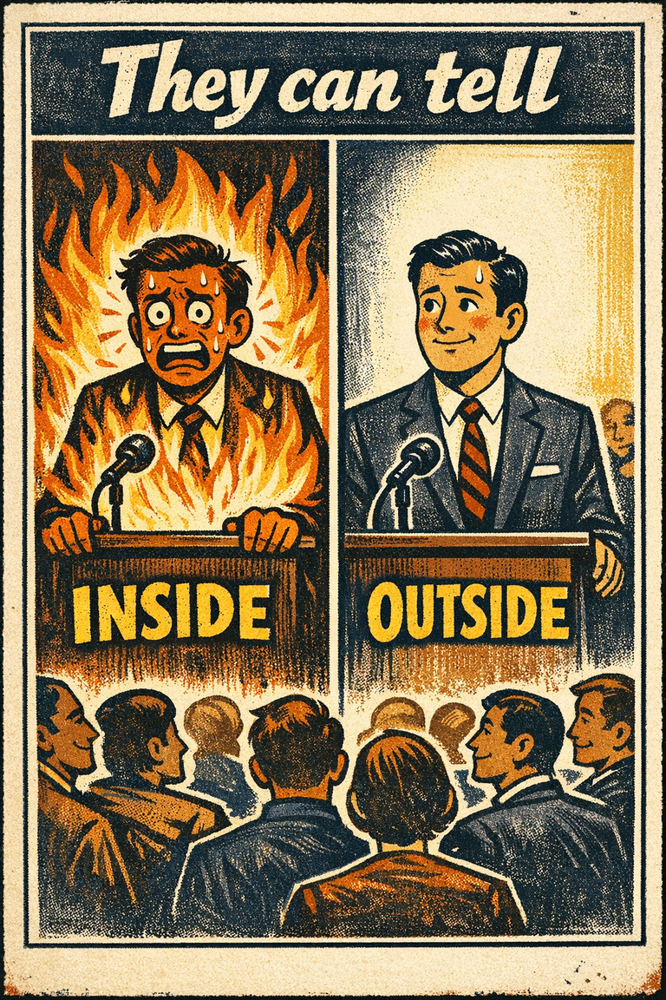
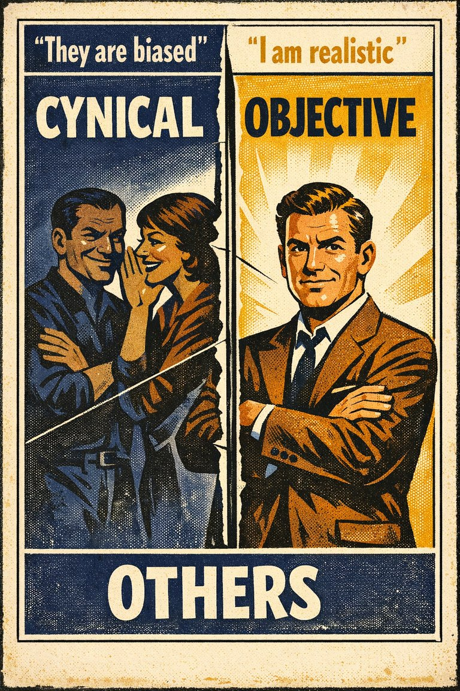
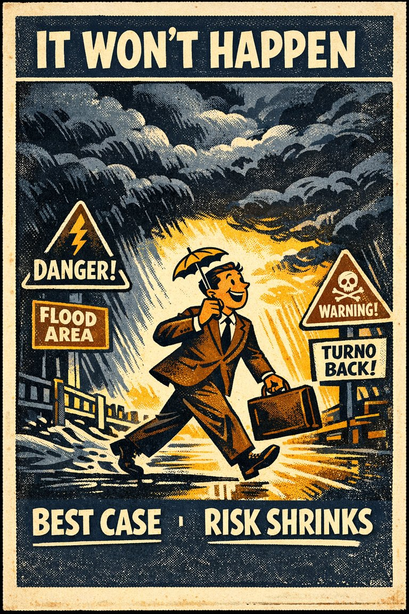
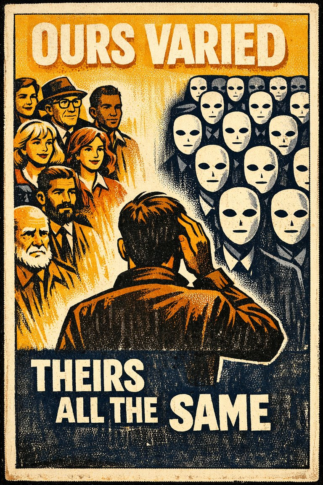

Everyday life
In everyday life, this often looks like people leaning on the easiest first interpretation when situations where estimation is already difficult and the self-perspective cue feels easier to trust than a fuller review..

Cognitive Biases
A practical cognitive-bias site with clear definitions, learning paths, assessments, self-audits, and debiasing tools.
Cognitive Bias
An exception to the fundamental attribution error, where people view others as having (situational) extrinsic motivations, while viewing themselves as having (dispositional) intrinsic motivations
What it distorts
Biases that distort numerical judgment, risk perception, calibration, and first-pass estimates.
Typical trigger
Situations where estimation is already difficult and the self-perspective cue feels easier to trust than a fuller review.
First countermove
Start with the estimation question instead of the first intuitive answer, then check whether the self-perspective pattern is doing invisible work.
Best use
Quick reference
What number, rate, sample, or magnitude is being misread because the mind grabbed an easier proxy?
In estimation problems, the bias intensifies when ego, identity, ownership, or asymmetry between self and others enters the picture before a fuller check catches up.
Use the quick check and reflection questions before locking the label. Nearby entries often share the same outer appearance while differing in what actually drives the distortion.
Each example changes the surface context while keeping the same hidden distortion in place.
In everyday life, this often looks like people leaning on the easiest first interpretation when situations where estimation is already difficult and the self-perspective cue feels easier to trust than a fuller review..
At work, this often appears when teams treat the first coherent story as sufficient instead of slowing the process long enough to compare alternatives.
In public discourse, it often surfaces when commentators move too quickly from salience to conclusion while the underlying evidence remains thinner than it sounds.
The distortion usually feels like ordinary good judgment from the inside, which is why procedural repairs matter more than mere recognition.
Teaching note: Start with the estimation problem, then show how the self-Perspective pattern makes the distortion feel natural from the inside.
The strongest debiasing moves change the process, not just the label.
Start with the estimation question instead of the first intuitive answer, then check whether the self-perspective pattern is doing invisible work.
Ask someone else to restate the case from a genuinely different starting point before committing.
Change the workflow so this distortion becomes harder to repeat by default next time.
Practice And Repair
Follow the moment where the bias first becomes attractive, then track how that attraction turns into a distorted judgment before jumping straight to the label.
Situations where estimation is already difficult and the self-perspective cue feels easier to trust than a fuller review.
The first coherent reading starts to feel like ordinary good judgment from the inside.
Biases that distort numerical judgment, risk perception, calibration, and first-pass estimates.
Start with the estimation question instead of the first intuitive answer, then check whether the self-perspective pattern is doing invisible work.
What number, rate, sample, or magnitude is being misread because the mind grabbed an easier proxy?
Spot It
Slow It
Reframe It
These are nearby labels that can share the same outer appearance while differing in what actually drives the distortion. Use the overlap, the distinction, and the diagnostic question together before settling the call.
Why compare it: A nearby label worth comparing before settling the diagnosis.
Why compare it: A nearby label worth comparing before settling the diagnosis.
Why compare it: A nearby label worth comparing before settling the diagnosis.
These are useful when the label seems roughly right but the process change still feels underspecified.
What number, rate, sample, or magnitude is being misread because the mind grabbed an easier proxy?
What changes in this judgment when the person involved is me, my group, or someone I already identify with?
What evidence or comparison would most seriously change the current call?
These sourced cases come from closely related biases and help show the same kind of pressure while a direct case for this page catches up.
Comparative-risk optimism studies
People often rate themselves as less likely than comparable others to experience negative events and more likely to experience positive ones.
Why it fits: The desirable future becomes overrepresented in personal expectation relative to relevant comparators.
Related through: Optimism bias
Modern psychology research
Experts write for novices as if key steps were obvious
Teachers, product designers, and subject-matter experts often skip intermediate steps because once they know the structure, it becomes hard to imagine what it feels like not to know it.
Why it fits: Possession of the knowledge compresses the apparent distance between expert and novice.
Related through: Curse of knowledge
Modern communication research
These linked tools turn the page into practice instead of leaving it at the level of definition.
This bias does not yet have a dedicated path, but these nearby paths are usually the clearest place to see the same family of distortion in motion.
Nearby path
Use this path when someone sounds sure, fluent, or experienced and you need to know whether the underlying understanding is actually there.
Nearby path
Use this path when a room feels aligned too quickly or when private judgment is likely being bent by social cost.
This bias does not yet have its own dedicated self-check, but these nearby audits usually catch the same kind of drift before it hardens.
Nearby audit
Do I really understand this, or has fluency outrun competence?
Nearby audit
Would I still hold this view if I had to write it down alone before hearing the room?
This bias is not yet the named center of its own kit, but it already appears in nearby workshop material that teaches the same pressure in context.
Nearby workshop
Relationship Conflict Attribution Reset
A reflective kit for slowing motive-reading, character verdicts, and self-protective memory during conflict.
Nearby workshop
Confidence vs Understanding Classroom Kit
A lesson for showing how fluency, confidence, and real transferable understanding come apart.
There is no dedicated scenario for this bias yet, but these nearby cases test the same kind of pressure and repair move.
Nearby scenario
Everyone probably agrees with me
A manager assumes most of the team privately supports a new policy because the people he talks to most often support it and because open disagreement in meetings has been sparse.
Nearby scenario
Everyone probably wants the same holiday
One family member assumes everyone else wants a quiet holiday because that is what sounds obviously restorative to him. Later he learns others wanted a larger gathering but did no…
These neighbors were selected from shared categories, shared patterns, and explicit editorial links where available.

The tendency for better-informed people to underestimate how hard the issue looks to less-informed people.

The tendency to overestimate how many other people share one's own beliefs, preferences, habits, or reactions.

The tendency to overestimate how visible one's thoughts, feelings, or intentions are to others.

The tendency to expect more egocentric bias in others than in oneself.

The tendency to overestimate favorable outcomes and underestimate the probability or impact of unfavorable ones, especially for oneself or one's own plans.

The tendency to see members of other groups as more alike than members of one's own group.